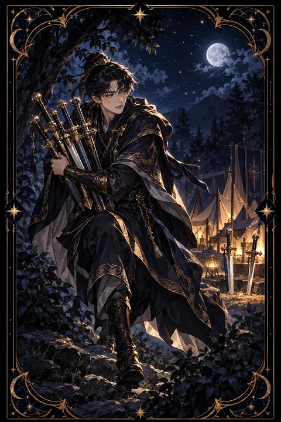

검 7 카드 — 몰래 빠져나가는 속임수와 전략
검 7 카드 한눈에 보기
검 7 카드 상징 읽기

동네보살의 카드 그림은 전통 라이더–웨이트 덱의 뜻을 새 그림으로 옮긴 것입니다. 아래 상징 설명은 전통 덱의 그림을 기준으로 합니다.
천막이 늘어선 진영에서 한 남자가 다섯 자루의 검을 품에 안고 발끝으로 조심스럽게 빠져나가고 있습니다. 그는 어깨 너머로 뒤를 돌아보며 묘한 미소를 짓고 있어 들키지 않았다는 안도와 교활함이 함께 느껴집니다.
남자가 들고 가는 검은 남의 것을 몰래 챙기는 행동, 혹은 정면 대결을 피하고 꾀로 이득을 얻으려는 전략을 상징합니다. 땅에 꽂힌 채 남겨진 두 자루의 검은 아무리 치밀한 계획에도 빈틈이 남는다는 것을 보여 줍니다. 모든 것을 한 번에 가져갈 수는 없었던 셈입니다.
멀리 보이는 천막 근처의 사람들은 아직 이 일을 알아차리지 못했습니다. 밝은 노란 하늘은 숨긴 일도 결국 환한 곳에 드러날 수 있음을 뜻합니다. 이 카드는 요령과 속임수 사이의 경계를 묻는 그림입니다. 남자가 걷는 방향과 시선이 엇갈려 있는 것도 앞과 뒤가 다른 속내를 나타냅니다.
검 7 카드 정방향 뜻
정방향 검 7은 속임수, 은밀한 행동, 전략을 뜻합니다. 누군가 뒤에서 몰래 이득을 챙기거나 말과 속이 다른 행동을 할 수 있으니 주변을 잘 살펴야 하는 시기입니다. 지나치게 좋은 조건이나 확인되지 않은 약속은 서명이나 송금 전에 사실부터 확인해 두세요.
한편 이 카드는 스스로의 모습을 비추기도 합니다. 정면으로 부딪치기보다 요령이나 편법으로 상황을 넘기고 싶은 마음이 들 수 있습니다. 상황에 맞는 전략과 지혜는 필요하지만 다른 사람을 속여서 얻은 결과는 오래가지 못하고 신뢰를 잃게 만듭니다.
중요한 서류, 물건, 정보는 꼼꼼하게 관리하고 약속은 기록으로 남겨 두세요. 자신이 선택한 방법이 떳떳하게 밝힐 수 있는 것인지 스스로 물어보는 것이 이 카드를 현명하게 쓰는 방법입니다.
검 7 카드 역방향 뜻
역방향 검 7은 숨겨졌던 일이 드러나는 흐름을 보여 줍니다. 속임수가 밝혀지거나 잃었던 것을 되찾게 될 수 있으며 감춰 왔던 사실을 털어놓고 싶은 양심의 목소리가 커지는 시기이기도 합니다.
스스로 무언가를 숨겨 왔다면 먼저 솔직하게 밝히는 편이 짐을 덜어 줍니다. 드러날까 봐 전전긍긍하는 시간보다 털어놓고 책임지는 과정이 훨씬 가볍습니다.
또 다른 의미로 이 카드는 스스로를 속이는 마음을 가리키기도 합니다. 충분한 실력이 있는데도 자신을 가짜처럼 느끼며 인정받는 것을 불편해하는 경우입니다. 그동안 해 온 일과 성과를 구체적으로 적어 보면 자신의 몫을 객관적으로 확인할 수 있습니다. 숨길 것이 없어질 때 발걸음은 다시 당당해집니다. 먼저 밝힌 사람에게는 대개 다시 설 기회가 주어집니다. 떳떳해진 마음은 어떤 칭찬보다 큰 힘이 됩니다.
연애에서 검 7 카드
혼자인 때라면 호감이 가는 사람이 나타나도 속내를 가늠하기 어려운 시기입니다. 말과 행동이 같은 방향을 가리키는지 천천히 지켜보고 마음을 한꺼번에 다 내주지 않는 편이 안전합니다. 여러 사람에게 애매한 신호를 보내는 상대라면 거리를 조금 두고 보세요.
누군가와 사귀는 중이라면 서로 털어놓지 않은 이야기나 감추는 행동이 있을 수 있습니다. 증거 없는 의심은 관계를 갉아먹지만 마음에 걸리는 부분이 있다면 차분한 말투로 직접 물어보세요. 자신이 무언가를 숨기고 있다면 들키기 전에 먼저 털어놓아야 믿음이 지켜집니다. 카드가 거꾸로 나왔다면 감춰진 일이 밝혀지며 관계를 새로 정리할 계기가 찾아옵니다. 솔직함이야말로 두 사람을 지키는 가장 튼튼한 울타리입니다.
재회·속마음 질문에서 검 7 카드
재회 질문에서 검 7이 나오면 두 사람 사이에 아직 말하지 않은 사실이나 숨겨진 사정이 있다는 뜻입니다. 상대가 진심을 다 드러내지 않고 있거나 재회를 원하는 이유가 순수하지 않을 수 있으니 신중하게 살펴야 합니다. 상대의 마음을 떠보는 계산된 연락보다 솔직한 대화가 오히려 흐름을 바로잡습니다. 역방향이라면 감춰진 진실이 드러나며 관계를 다시 판단할 기회가 찾아옵니다. 다시 만날 생각이라면 헤어진 뒤 서로에게 숨겼던 사정을 털어놓을 수 있는지부터 스스로 물어보세요. 비밀을 안은 채 이어진 관계는 같은 자리에서 다시 흔들리기 쉽습니다. 상대의 말이 앞뒤가 맞는지 차분히 살피되 지나친 의심으로 대화의 문을 닫지는 않도록 조심하세요.
일·금전에서 검 7 카드
일과 직장에서는 공을 가로채거나 정보를 숨기는 사람이 있을 수 있는 시기입니다. 중요한 업무는 메일이나 문서로 기록을 남기고 자신의 기여를 분명하게 해 두는 것이 좋습니다. 경쟁 상황이라면 전략을 세우는 것은 필요하지만 편법이나 규칙 위반은 결국 더 큰 손해로 돌아옵니다.
돈과 관련해서는 사기나 눈속임에 주의해야 합니다. 지나치게 좋은 조건의 제안, 출처가 불분명한 부업 권유는 한 번 더 확인하세요. 계좌 내역과 영수증을 꼼꼼히 살피는 습관이 손실을 막아 줍니다. 자신의 성과를 겸손하게 감추기만 하면 남이 가져가기 쉬우니 적절한 때에 분명히 알리세요. 정직하게 쌓은 평판은 어떤 전략보다 오래 자신을 지켜 줍니다. 문서 보관 습관이 곧 자신을 지키는 방패입니다.
검 7 카드는 예일까 아니오일까
숨겨진 의도나 속임수가 끼어 있을 수 있다는 카드여서 쉽게 믿고 진행하기 어려운 아니오로 판단합니다. 뒤집어진 채 나왔다면 감춰진 사실이 드러나 상황이 정리되는 흐름이라 확인을 거친 뒤에는 조건부로 바뀝니다.
자주 묻는 질문
검 7 카드 역방향은 나쁜 뜻인가요?
역방향 검 7은 숨겨졌던 일이 드러나는 흐름을 보여 줍니다. 속임수가 밝혀지거나 잃었던 것을 되찾게 될 수 있으며 감춰 왔던 사실을 털어놓고 싶은 양심의 목소리가 커지는 시기이기도 합니다.
검 7 카드가 연애 질문에 나오면요?
혼자인 때라면 호감이 가는 사람이 나타나도 속내를 가늠하기 어려운 시기입니다. 말과 행동이 같은 방향을 가리키는지 천천히 지켜보고 마음을 한꺼번에 다 내주지 않는 편이 안전합니다. 여러 사람에게 애매한 신호를 보내는 상대라면 거리를 조금 두고 보세요.
타로 카드는 어떻게 뽑나요?
타로 카드 페이지에서 78장을 섞으면 그중 22장이 펼쳐집니다. 마음이 가는 세 장을 고르면 과거·현재·미래 자리에 놓이고, 한 장씩 뒤집어 자리와 방향에 맞는 풀이를 읽습니다. 정방향과 역방향은 섞는 순간 정해집니다.